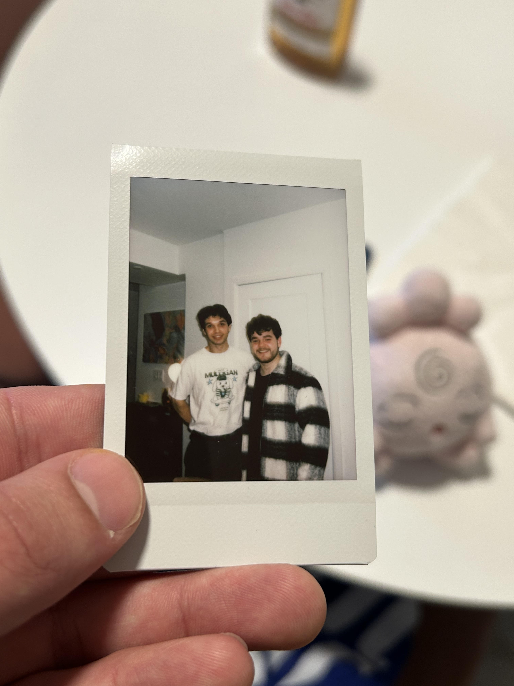
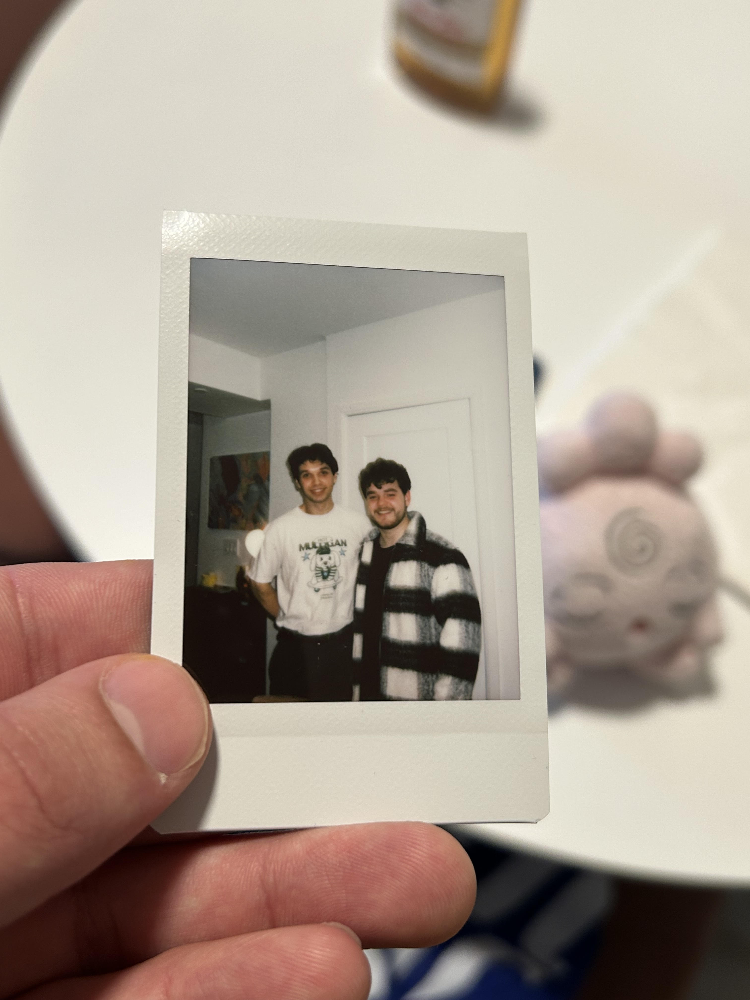

Welcome to Ethan's Place
This website serves as a space to showcase my work, as well as give insight towards who I am both as a person and a developer. Below will explain the navigation bar and how to use it to explore my website.
 

- About:
- The about tab gives you a glimsp into the person I am, not only professionally but also personally. I provide a synopsis of my education inside and outside of coding, as well as paint picture of who I am as a person.
- Projects:
- The projects tab is broken down into three seperate sections...
- Current Projects
- Hall of Fame
- All Projects
- Hall of Fame displays what I consider to my best projects, it is what I am most proud to showcase and I believe gives an honest representation of my skills as a developer.
- All Projects is a list of everything I have previously developed as well as a blog that logs the development of each project.
- Github:
- My github profile and contributions. Code for all my projects will be posted here.
- Portfolio:
- The portfolio tab reflects the work that I currently have on my resume. It is intended for employers and distills the about me and projects tabs to see who I am and what Im capable of at a quick glance.